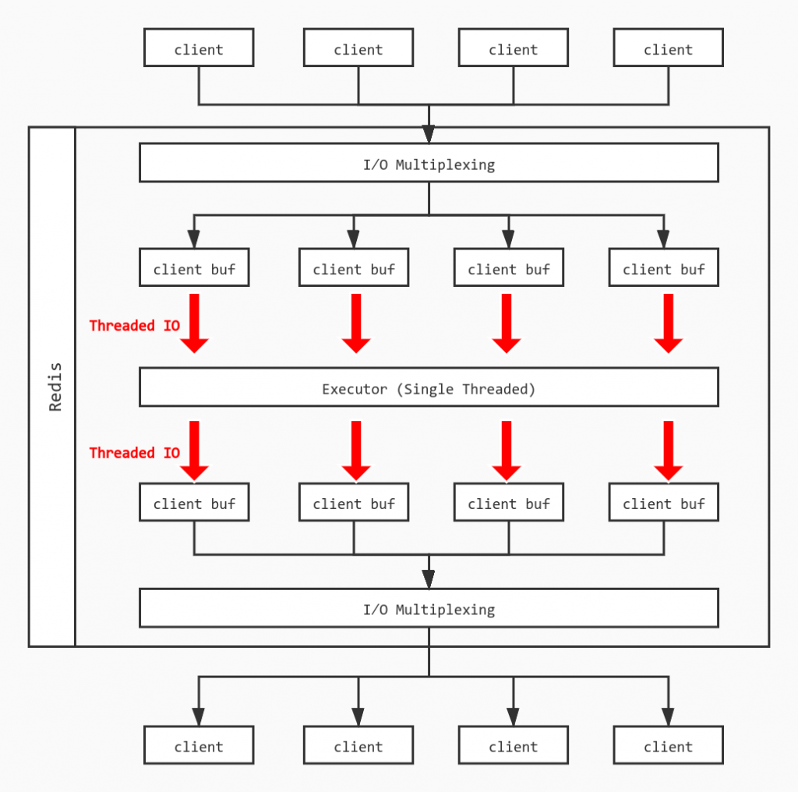

面试
上周参加了字节跳动的面试，也是18年毕业后的首次面试，整场下来一共70分钟，面试官非常Nice，无奈自己太过紧张，很多准备好的知识点都没有能够准确传达意思。
面试中因为在简历上有提到Redis相关的内容，那么毫无疑问就会被问到了。先从经典的问题开始：Reids为什么这么快？那自然会回答诸如单线程、IO多路复用等固定套路，然后这里因为一直有关注Redis的相关新闻，知道Redis 6.0年末发布了RC1版本，其中新特性包括多线程IO，那么自然想在面试中提及一下。面试官应该对这点比较感兴趣，于是就继续探讨了这个多线程IO的模型。
- Q：Redis 6多线程是指什么？
- A：Redis这边将部分处理流程改为多线程，具体来说是..
- Q：是指查询是多线程吗？
- A：应该说是处理请求的最后部分改为了多线程，因为这些部分涉及到数据的IO，是整个（Redis）模型中最耗时的部分，所以改成了多线程；这部分之前的比如用户请求进来、将请求放入一个队列中，还是单线程的。（注意这部分回答是错误的，实际上Redis是将网络IO的部分做成了多线程，后文继续分析）
- Q：如果我有一个SET操作的话，是单线程还是多线程？
- A：多线程。（回答也是错的）
- Q：那如果是，因为Redis都是内存操作，如果多线程操作一个数据结构的话会有问题吗？
- A：Emm，目前我理解的模型上看确实会有问题，比如并发改同一个Key，那可能Redis有对应处理这些问题比如进行加锁处理。（确实不了解，回答也自然是错的）
- Q：好，下一个问题..
这里先总结一下：
- 因为Antirez在Redis Day介绍过，所以就了解到了有这么个新Feature，但是具体的实现因为没有看过源码，所以实际上对这个多线程模型的理解是有偏差的。
- 如果对这些点没有十足的把握的话，面试中尝试自己思考和解决这样的问题实际上还是会比较扣分，首先如果猜错了的话肯定不行，其次即使是猜对了也很难有足够的知识储备去复述出完整的模型出来，也会让自己一边思考一边表达起来很费劲。
于是坑坑洼哇地坚持完了70分钟的面试，再总结一下做得不足的地方，因为是1.5Year经验，面试官主要考察：
- 现有的业务的一些设计细节的问题：要提前准备好你想介绍给面试官的业务系统，个人认为应该从业务中选出一两个难度比较大的点会比较合适。这次面试没有能够拿出对应的业务来介绍，是准备不到位。
- 数据库的基础知识：这块觉得回答得还可以，不过有的时候因为准备的东西比较多，会经常想充分地展现和描述，有的时候可能会比较冗长，也是表达不够精确的问题。
- 计算机网络的基础知识：不是科班毕业，没有能够答完美，实际上问题并不难。
- 计算机系统的基础知识：同上。
- 一道算法题：字节跳动给的算法题还是偏简单和经典的，建议多刷题和看Discussion总结。
所以就这样结束了第一次的社招面试，整体来说几个方向的基础知识需要回去再多写多看就可以了，然后表达上尽量控制时间和范围，深入的内容如果面试官希望和你继续探讨，自然会发问，如果没问，可以提及但是不应该直接展开讲。
Redis的Threaded IO
面试结束后马上知道这块的回答有问题，检查果然如此。所以也就借这个机会将Threaded IO对应的源码看了一遍，后续如果有机会的话，希望能跟下一位面试官再来探讨这个模型。
综述
本次新增的代码位于networking.c中，很显然多线程生效的位置就能猜出来是在网络请求上。作者希望改进读写缓冲区的性能，而不是命令执行的性能主要原因是：
- 读写缓冲区的在命令执行的生命周期中是占了比较大的比重
- Redis更倾向于保持简单的设计，如果在命令执行部分改用多线程会不得不处理各种问题，例如并发写入、加锁等
那么将读写缓冲区改为多线程后整个模型大致如下：

具体模型
线程初始化(initThreadedIO)
首先，如果用户没有开启多线程IO，也就是io_threads_num == 1时直接按照单线程模型处理；如果超过线程数IO_THREADS_MAX_NUM上限则异常退出。
紧接着Redis使用listCreate()创建io_threads_num个线程，并且对主线程（id=0）以外的线程进行处理：
- 初始化线程的等待任务数为0
- 获取锁，使得线程不能进行操作
- 将线程tid与Redis中的线程id（for循环生成）进行映射
/* Initialize the data structures needed for threaded I/O. */
void initThreadedIO(void) {
io_threads_active = 0; /* We start with threads not active. */
/* Don't spawn any thread if the user selected a single thread:
* we'll handle I/O directly from the main thread. */
// 如果用户没有开启多线程IO直接返回 使用主线程处理
if (server.io_threads_num == 1) return;
// 线程数设置超过上限
if (server.io_threads_num > IO_THREADS_MAX_NUM) {
serverLog(LL_WARNING,"Fatal: too many I/O threads configured. "
"The maximum number is %d.", IO_THREADS_MAX_NUM);
exit(1);
}
/* Spawn and initialize the I/O threads. */
// 初始化io_threads_num个对应线程
for (int i = 0; i < server.io_threads_num; i++) {
/* Things we do for all the threads including the main thread. */
io_threads_list[i] = listCreate();
if (i == 0) continue; // Index 0为主线程
/* Things we do only for the additional threads. */
// 非主线程则需要以下处理
pthread_t tid;
// 为线程初始化对应的锁
pthread_mutex_init(&io_threads_mutex[i],NULL);
// 线程等待状态初始化为0
io_threads_pending[i] = 0;
// 初始化后将线程暂时锁住
pthread_mutex_lock(&io_threads_mutex[i]);
if (pthread_create(&tid,NULL,IOThreadMain,(void*)(long)i) != 0) {
serverLog(LL_WARNING,"Fatal: Can't initialize IO thread.");
exit(1);
}
// 将index和对应线程ID加以映射
io_threads[i] = tid;
}
}</code></pre>
读事件到来（readQueryFromClient）
Redis需要判断是否满足Threaded IO条件，执行if (postponeClientRead(c)) return;，执行后会将Client放到等待读取的队列中，并将Client的等待读取Flag置位：
int postponeClientRead(client *c) {
if (io_threads_active && // 线程是否在不断(spining)等待IO
server.io_threads_do_reads && // 是否多线程IO读取
!(c->flags & (CLIENT_MASTER|CLIENT_SLAVE|CLIENT_PENDING_READ)))
{//client不能是主从，且未处于等待读取的状态
c->flags |= CLIENT_PENDING_READ; // 将Client设置为等待读取的状态Flag
listAddNodeHead(server.clients_pending_read,c); // 将这个Client加入到等待读取队列
return 1;
} else {
return 0;
}
}</code></pre>
这时server维护了一个clients_pending_read，包含所有处于读事件pending的客户端列表。
如何分配client给thread（handleClientsWithPendingReadsUsingThreads）
首先，Redis检查有多少等待读的client：
istLength(server.clients_pending_read)</code></pre>
如果长度不为0，进行While循环，将每个等待的client分配给线程，当等待长度超过线程数时，每个线程分配到的client可能会超过1个：
int item_id = 0;
while((ln = listNext(&li))) {
client *c = listNodeValue(ln);
int target_id = item_id % server.io_threads_num;
listAddNodeTail(io_threads_list[target_id],c);
item_id++;
}</code></pre>
并且修改每个线程需要完成的数量（初始化时为0）：
for (int j = 1; j < server.io_threads_num; j++) {
int count = listLength(io_threads_list[j]);
io_threads_pending[j] = count;
}</code></pre>
等待处理直到没有剩余任务：
hile(1) {
unsigned long pending = 0;
for (int j = 1; j < server.io_threads_num; j++)
pending += io_threads_pending[j];
if (pending == 0) break;
}</code></pre>
最后清空client_pending_read：
istRewind(server.clients_pending_read,&li);
while((ln = listNext(&li))) {
client *c = listNodeValue(ln);
c->flags &= ~CLIENT_PENDING_READ;
if (c->flags & CLIENT_PENDING_COMMAND) {
c->flags &= ~ CLIENT_PENDING_COMMAND;
processCommandAndResetClient(c);
}
processInputBufferAndReplicate(c);
}
listEmpty(server.clients_pending_read);</code></pre>
如何处理读请求
在上面的过程中，当任务分发完毕后，每个线程按照正常流程将自己负责的Client的读取缓冲区的内容进行处理，和原来的单线程没有太大差异。
每轮处理中，需要将各个线程的锁开启，并且将相关标志置位：
void startThreadedIO(void) {
if (tio_debug) { printf("S"); fflush(stdout); }
if (tio_debug) printf("--- STARTING THREADED IO ---\n");
serverAssert(io_threads_active == 0);
for (int j = 1; j < server.io_threads_num; j++)
// 解开线程的锁定状态
pthread_mutex_unlock(&io_threads_mutex[j]);
// 现在可以开始多线程IO执行对应读/写任务
io_threads_active = 1;
}</code></pre>
同样结束时，首先需要检查是否有剩余待读的IO，如果没有，将线程锁定，标志关闭：
void stopThreadedIO(void) {
// 需要停止的时候可能还有等待读的Client 在停止前进行处理
handleClientsWithPendingReadsUsingThreads();
if (tio_debug) { printf("E"); fflush(stdout); }
if (tio_debug) printf("--- STOPPING THREADED IO [R%d] [W%d] ---\n",
(int) listLength(server.clients_pending_read),
(int) listLength(server.clients_pending_write));
serverAssert(io_threads_active == 1);
for (int j = 1; j < server.io_threads_num; j++)
// 本轮IO结束 将所有线程上锁
pthread_mutex_lock(&io_threads_mutex[j]);
// IO状态设置为关闭
io_threads_active = 0;
}</code></pre>
其他补充
Redis的Threaded IO模型中，每次所有的线程都只能进行读或者写操作，通过io_threads_op控制，同时每个线程中负责的client依次执行：
// 每个thread有可能需要负责多个client
listRewind(io_threads_list[id],&li);
while((ln = listNext(&li))) {
client *c = listNodeValue(ln);
if (io_threads_op == IO_THREADS_OP_WRITE) {
// 当前全局处于写事件时，向输出缓冲区写入响应内容
writeToClient(c,0);
} else if (io_threads_op == IO_THREADS_OP_READ) {
// 当前全局处于读事件时，从输入缓冲区读取请求内容
readQueryFromClient(c->conn);
} else {
serverPanic("io_threads_op value is unknown");
}
}</code></pre>
每个线程执行readQueryFromClient，将对应的请求放入一个队列中，单线程执行，最后类似地由多线程将结果写入客户端的buffer中。
总结
Threaded IO将服务读Client的输入缓冲区和将执行结果写入输出缓冲区的过程改为了多线程的模型，同时保持同一时间全部线程均处于读或者写的状态。但是命令的具体执行仍是以单线程（队列）的形式，因为Redis希望保持简单的结构避免处理锁和竞争的问题，并且读写缓冲区的时间占命令执行生命周期的比重较大，处理这部分的IO模型会给性能带来显著的提升。